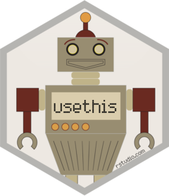

| usethis-package {usethis} | R Documentation |

Automate package and project setup tasks that are otherwise performed manually. This includes setting up unit testing, test coverage, continuous integration, Git, 'GitHub', licenses, 'Rcpp', 'RStudio' projects, and more.
Maintainer: Jennifer Bryan jenny@rstudio.com (0000-0002-6983-2759)
Authors:
Hadley Wickham hadley@rstudio.com (0000-0003-4757-117X)
Other contributors:
RStudio [copyright holder, funder]
Useful links:
Report bugs at https://github.com/r-lib/usethis/issues